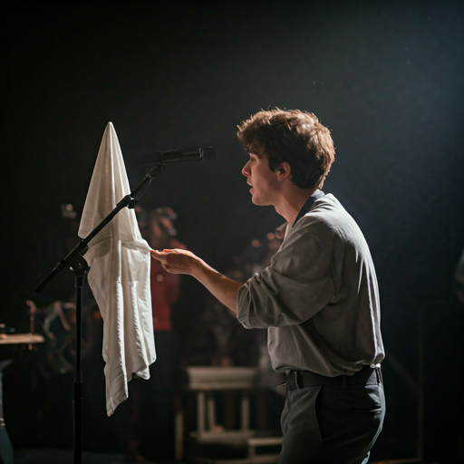

Paid opportunities
Performing artists are paid directly through the pilot logic rather than through opaque last-minute budgeting.
Live4Fair is building a fairer pathway to live performance, where artists are seen, selected through transparent pilot logic, and supported through a community-backed local model.

Being an independent artist often means doing far more than making the work. You write emails, wait for replies, guess at selection logic, and absorb instability that should not sit only on your shoulders.
Live4Fair is an attempt to build a clearer bridge between local audience support, venue activation, and artist opportunity - without pretending the pilot already solves everything.
Performing artists are paid directly through the pilot logic rather than through opaque last-minute budgeting.
Artists should understand how pools are curated, how rooms are matched, and how rotation is being tested.
Even when an artist is not on stage that month, the pilot can still make their place in the pool visible.
Live4Fair begins with curated artist pools shaped by member interest, local fit, and quality thresholds. In the pilot phase, some artists perform each month while others remain visible in the pool and benefit from the wider support structure as the model grows.
The pilot begins with curation, not totally open selection. That keeps the rooms coherent, the member experience honest, and the artist-pool logic testable.
Live4Fair is not promising equal stage time immediately. It is building a transparent pool system with room for rotation and learning.
Performing artists are paid directly, and non-performing artists still remain visible inside the pilot economics. The long-term aim is a fairer pathway, built transparently rather than promised vaguely.